ANDROID OS VERSIONS
The version history of the Android mobile operating system began with the release of the
Android alpha in November 2007. The first commercial version, Android 1.0, was released
in September 2008. Android is continually developed by Google and the Open Handset Alliance (OHA),
and has seen a number of updates to its base operating system since the initial release.
The most recent major Android update is Android 6.0 "Marshmallow", which was released in October 2015. Since April 2009, Android versions have been developed under a confectionery-themed code name and released in alphabetical order, beginning with Android 1.5 "Cupcake"; the earlier versions 1.0 and 1.1 were not released under specific code names.
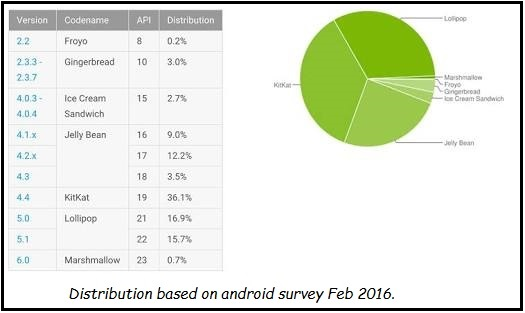

RELEASED ON: 23-SEPT-2008
FEATURES
RELEASED ON: 09-FEB-2009
FEATURES
RELEASED ON: 27-APRIL-2009
FEATURES
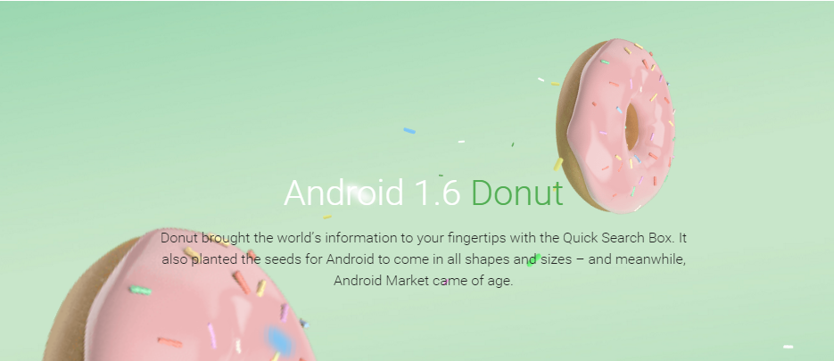
RELEASED ON: 15-SEPT-2009
FEATURES
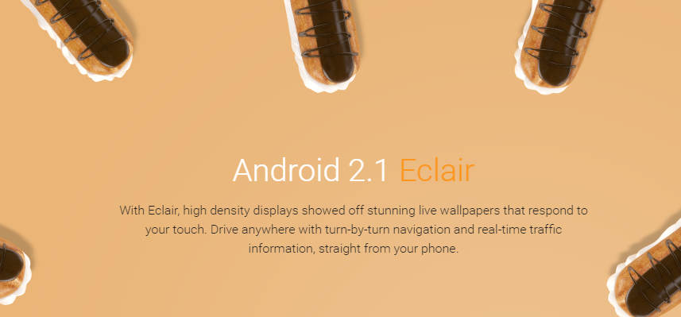
RELEASED ON: 03-DEC-2009
FEATURES
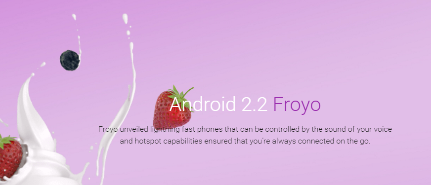
RELEASED ON: 29-MAY-2010
FEATURES
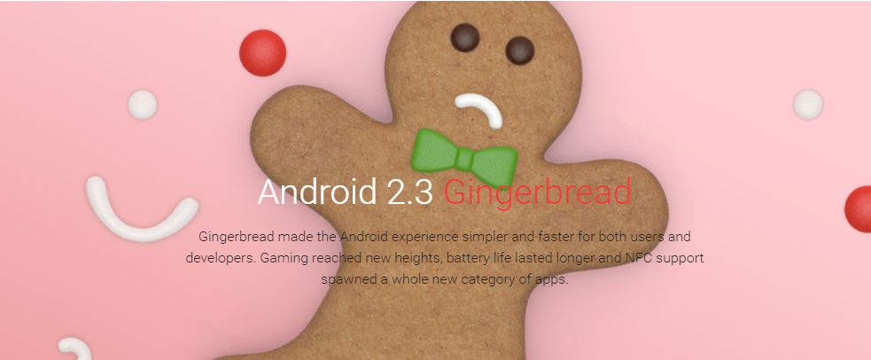
RELEASED ON: 06-DEC-2010
FEATURES
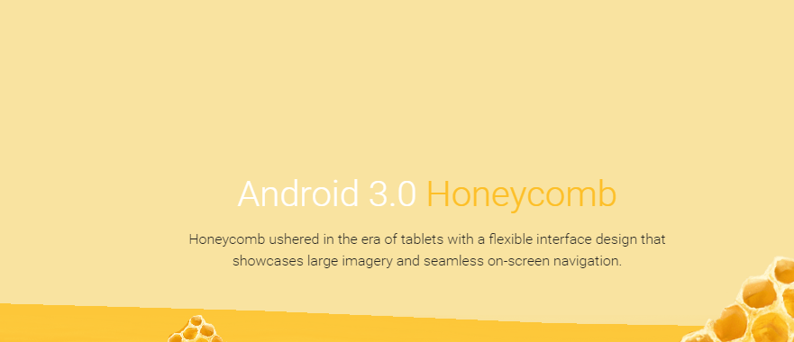
RELEASED ON: 22-FEB-2011
FEATURES
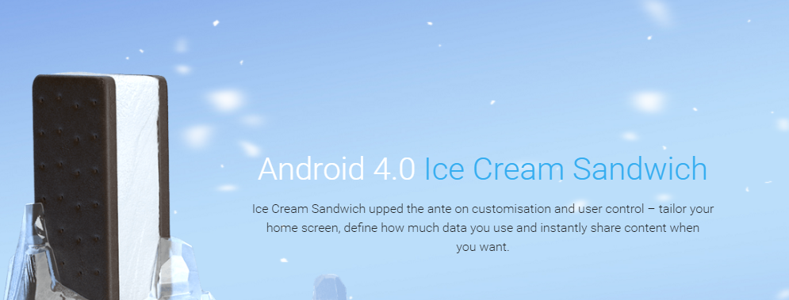
RELEASED ON: 18-OCT-2011
FEATURES
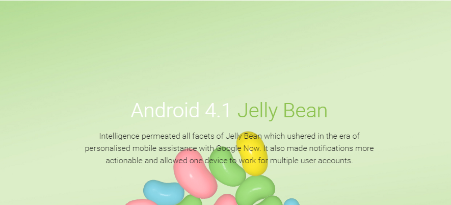
RELEASED ON: 09-JUL-2012
FEATURES
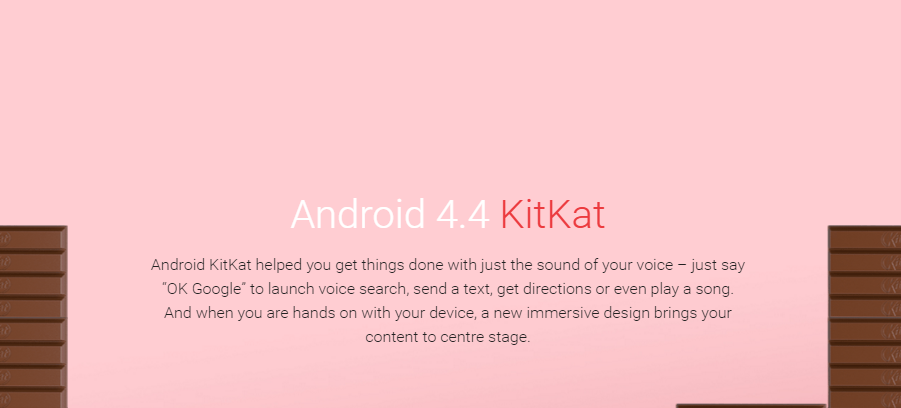
RELEASED ON: 31-OCT-2013
FEATURES
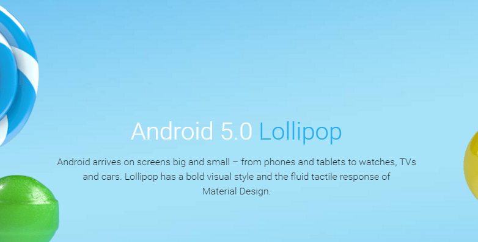
RELEASED ON: 12-NOV-2014
FEATURES
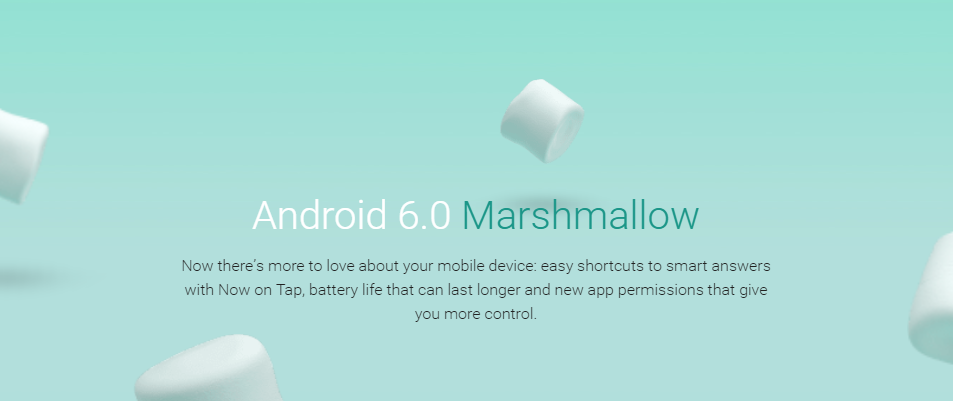
RELEASED ON: 5-OCT-2015
FEATURES
The most recent major Android update is Android 6.0 "Marshmallow", which was released in October 2015. Since April 2009, Android versions have been developed under a confectionery-themed code name and released in alphabetical order, beginning with Android 1.5 "Cupcake"; the earlier versions 1.0 and 1.1 were not released under specific code names.
ANDROID-1.0 ALPHA
RELEASED ON: 23-SEPT-2008
FEATURES
- Android Market
- Web with HTML & XHTML
- Google Map
- Voice dialer
ANDROID-1.1 BETA
RELEASED ON: 09-FEB-2009
FEATURES
- Longer in-call screen timeout
- Ability to save attachments in message
- Support added for marquee in system
- Details and reviews available when a user searches for businesses on Maps
ANDROID-1.5 CUPCAKE
RELEASED ON: 27-APRIL-2009
FEATURES
- Support for third-party virtual keyboards with text prediction and user dictionary for custom words
- Support for Widgets
- Video recording and playback in MPEG-4 and 3GP formats
- Auto-rotation option
- Copy and paste features in web browser
ANDROID-1.6 DONUT
RELEASED ON: 15-SEPT-2009
FEATURES
- Voice and text entry search enhanced to include bookmark history, contacts, and the web
- Ability for users to select multiple photos for deletion
ANDROID-2.1 ECLAIR
RELEASED ON: 03-DEC-2009
FEATURES
- Bluetooth 2.1 support
- Support for more screen sizes and resolutions, with better contrast ratio
ANDROID-2.2 FROYO
RELEASED ON: 29-MAY-2010
FEATURES
- Speed, memory, and performance optimizations[
- USB tethering and Wi-Fi hotspot functionality
ANDROID-2.3 GINGERBREAD
RELEASED ON: 06-DEC-2010
FEATURES
- Support for Near Field Communication (NFC)
- Native support for more sensors (such as gyroscopes and barometers)
ANDROID-3.0 HONEYCOMB
RELEASED ON: 22-FEB-2011
FEATURES
- Optimized tablet support with a new “holographic” user interface
- Support for multi-core processors
ANDROID-4.0 ICE CREAM SANDWICH
RELEASED ON: 18-OCT-2011
FEATURES
- Ability to access applications directly from lock screen
- 1080p video recording for stock Android devices
ANDROID-4.1 JELLYBEAN
RELEASED ON: 09-JUL-2012
FEATURES
- Smoother user interface
- Enhanced accessibility
ANDROID-4.4 KITKAT
RELEASED ON: 31-OCT-2013
FEATURES
- Built-in screen recording feature
- Se-linux is set to Enforcing
ANDROID-5.0 LOLLIPOP
RELEASED ON: 12-NOV-2014
FEATURES
- ART-cache instead of Dalvik cache
- Support for 64-bit CPUs
ANDROID-6.0 MARSHMALLOW
RELEASED ON: 5-OCT-2015
FEATURES
- Now on Tap feature
- Doze mode to extend battery
GUESS WHAT ??WHOSE NEXT???
™ GP10